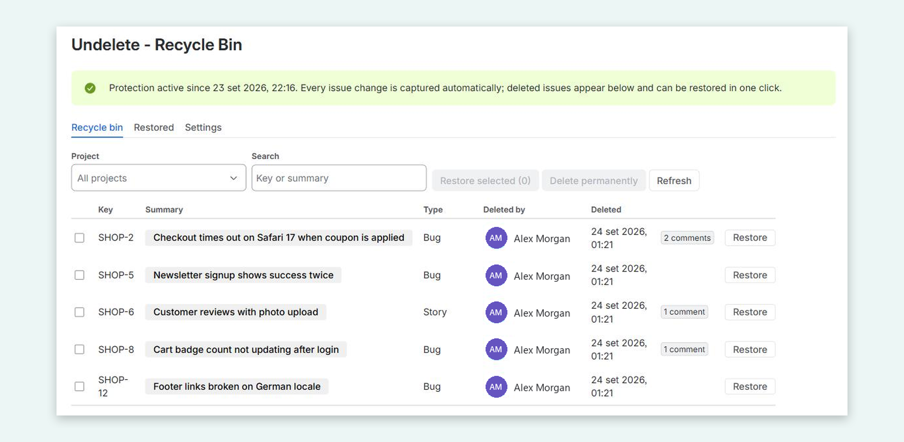

Getting started
- Install Undelete from the Atlassian Marketplace.
- Protection starts immediately. Undelete scans all existing issues in the background; the status banner shows progress.
- Open Jira Settings (⚙) → Apps → Undelete - Recycle Bin. You need to be a Jira administrator.
Restoring a deleted issue
- Open the Recycle bin tab. Filter by project or search by key or summary.
- Click an issue's summary to preview it: fields, description, comments, worklogs and links.
- Click Restore, or tick several issues and click Restore selected.
- Restored issues appear in the Restored tab with a link to the new issue.
What is restored: summary, description, issue type, status (when reachable in one transition), labels, priority, assignee, reporter, components, versions, due date, sprint, custom fields available on the create screen, estimates, comments (with the original author and date), worklogs (optional), issue links, epic/parent and sub-tasks. Restoring a parent automatically restores the sub-tasks that were deleted with it.
What can't be restored
- The original issue key. Jira assigns a new key; the original key is recorded in an audit comment on the restored issue.
- Attachment files. Jira deletes them together with the issue. Their names are listed on the restored issue.
- Field values Jira refuses on creation (e.g. archived versions, deactivated users). These are listed in the restore notes.
- Issues deleted before Undelete was installed.
Notifications
Restoring an issue creates a new Jira issue and adds its comments, so Jira sends its normal notifications (for example to the reporter, assignee and watchers). Undelete never @mentions people when restoring comments, so restoring doesn't ping everyone who was mentioned originally.
Settings
- Projects NOT protected: issues in these projects are not captured.
- Keep deleted issues for (days): older records are erased automatically (default 365, range 7-3650).
- Restore worklogs: turn off if logged time should not be re-created.
- Re-scan all issues now: captures any issue that is not protected yet (normally not needed).
Deleting permanently
Tick items in the recycle bin and click Delete permanently to erase their stored copies immediately, for example to honour a data-deletion request.
Security and data
Undelete is built on Atlassian Forge and runs on Atlassian: all data stays in Atlassian's cloud, with no external servers. Only Jira administrators can view or restore deleted issues. See the privacy policy.
Limits
Undelete runs on Atlassian Forge and is subject to Forge platform quotas and Jira rate limits. Very large issues (thousands of comments) keep their most recent comments and worklogs. Changes to issue links may take a few minutes to be captured.
Support
Email undeleted.support@gmail.com. We reply within one business day, and within 24 hours for critical issues.